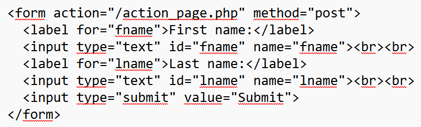

METODO GET CHE E' CONSIDERATO DI DEFAULT

METODO POST
--------------------------------------------------------------------------------
La differenza tra il browser e il motore di ricerca è che il browser è--------------------------------------------------------------------------------
URL (appunti):
get: file:///C:/action_page.html?menu=SECONDO&cars=audi